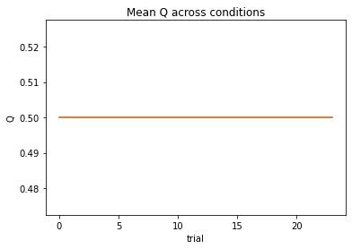
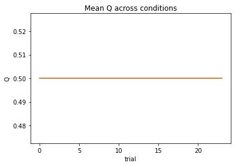
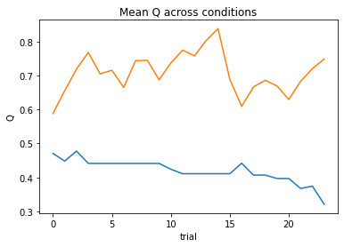
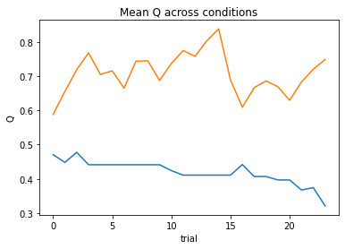
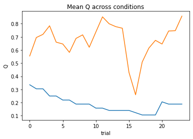
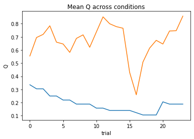

# first let's import our packages
from scipy.optimize import minimize # finding optimal params in models
from scipy import stats # statistical tools
import os # operating system tools
import numpy as np # matrix/array functions
import pandas as pd # loading and manipulating data
import ipywidgets as widgets # interactive display
import matplotlib.pyplot as plt # plotting
%matplotlib inline
np.random.seed(2021) # set seed for reproducibility
# this function will load the data into memory (assuming that
# the data are downloaded)
def load_subjects(how_many=15):
'''
input: number of subjects' data to load from 1-14
output: dictionary of DataFrames containing the data
'''
assert (how_many > 0) and (how_many <= 15), "0 < how_many < 15"
if os.path.isdir('../static/data'):
files = [f'../static/data/sub-{x:02}_RLdata.csv' for x in range(0,how_many)]
else:
files = [f'sub-{x:02}_RLdata.csv' for x in range(0,how_many)]
subject_data = {}
for index, file in enumerate(files):
subject_data[index] = pd.read_csv(file, index_col=0)
return subject_data
# let's load in our data using the function above
# feel free to adjust `how_many` (the default is all 15 subjects)
subject_data = load_subjects()
for subject_behavior in subject_data.values():
print(len(subject_behavior), end=" trials, ")
50 trials, 50 trials, 50 trials, 50 trials, 50 trials, 50 trials, 50 trials, 50 trials, 50 trials, 50 trials, 50 trials, 50 trials, 50 trials, 50 trials, 50 trials,
display(subject_data[0].head()) # first subject head
display(subject_data[2].head()) # third subject head
| stim_A | stim_B | choice | outcome | |
|---|---|---|---|---|
| 0 | 0.2 | 0.8 | 0 | 0 |
| 1 | 0.2 | 0.8 | 0 | 0 |
| 2 | 0.2 | 0.8 | 0 | 0 |
| 3 | 0.2 | 0.8 | 1 | 1 |
| 4 | 0.2 | 0.8 | 1 | 0 |
| stim_A | stim_B | choice | outcome | |
|---|---|---|---|---|
| 0 | 0.8 | 0.2 | 0 | 1 |
| 1 | 0.8 | 0.2 | 0 | 1 |
| 2 | 0.8 | 0.2 | 0 | 1 |
| 3 | 0.8 | 0.2 | 0 | 0 |
| 4 | 0.8 | 0.2 | 0 | 1 |
def plot_behavior(subject_data, subject_id, choices=False, outcomes=False, probability=False):
'''
input:
subject_data: dictionary containing
subject_id: integer from 0-14 corresponding to an ID number
choices: boolean indicating whether to plot choices or not
outcomes: boolean indicating whether to plot outcomes or not
probability: boolean indicating whether to plot the mean reward over trials for both stimuli or not
output:
plot of behavior
'''
assert type(subject_data) is dict, "`subject_data` should be a dictionary, run the `load_subjects()` function above to load the data into memory"
assert type(subject_id) is int and subject_id >= 0 and subject_id <= 14, "`subject_id` should be an integer between 0 and 14"
data = subject_data[subject_id]
if probability:
plt.axhline(np.mean(data[data.choice==0].outcome), color="orange", alpha=.4, label=data.columns[0])
plt.axhline(np.mean(data[data.choice==1].outcome), color="purple", alpha=.4, label=data.columns[1])
if outcomes:
plt.plot(range(len(data)), data.outcome, 'r--', alpha=.6, label='outcome')
if choices:
if np.mean(data.choice) < .5:
choice_data = [0 if x == 1 else 1 for x in data.choice]
else:
choice_data = [x for x in data.choice]
plt.plot(range(len(data)), choice_data, '+', label='choice')
plt.xlabel('trials')
plt.ylabel('outcome')
plt.title(f'Behavior from subject #{subject_id}')
plt.legend()
plt.show()
# one subject
plot_behavior(subject_data, 3, choices=True, outcomes=True, probability=True)

# all subjects
for x in range(15):
plot_behavior(subject_data, x, choices=True, outcomes=True, probability=True)
# all subjects using in one line of code [plot_behavior(subject_data, x, choices=True, outcomes=True, probability=True) for x in range(15)]


 

 

 



for i, s in enumerate(subject_data.values()):
print(f'subject {i}')
if s.stim_A.mean() > .5: # only print high probability stimulus
print(f'probability that stim A yielded reward: {s.stim_A.mean():.2f}')
print(f'actual frequency of choosing stim A: {1 - s.choice.mean():.2f}')
print(f'actual mean reward: {s.outcome.mean():.2f}')
else:
print(f'probability that stim B yielded reward: {s.stim_B.mean():.2f}')
print(f'actual frequency of choosing stim B: {s.choice.mean():.2f}')
print(f'actual mean reward: {s.outcome.mean():.2f}')
print()
subject 0
probability that stim B yielded reward: 0.80
actual frequency of choosing stim B: 0.60
actual mean reward: 0.52
subject 1
probability that stim B yielded reward: 0.80
actual frequency of choosing stim B: 0.70
actual mean reward: 0.62
subject 2
probability that stim A yielded reward: 0.80
actual frequency of choosing stim A: 0.68
actual mean reward: 0.58
subject 3
probability that stim A yielded reward: 0.80
actual frequency of choosing stim A: 0.86
actual mean reward: 0.70
subject 4
probability that stim B yielded reward: 0.80
actual frequency of choosing stim B: 0.54
actual mean reward: 0.54
subject 5
probability that stim A yielded reward: 0.80
actual frequency of choosing stim A: 0.74
actual mean reward: 0.50
subject 6
probability that stim A yielded reward: 0.80
actual frequency of choosing stim A: 0.66
actual mean reward: 0.68
subject 7
probability that stim A yielded reward: 0.80
actual frequency of choosing stim A: 0.88
actual mean reward: 0.68
subject 8
probability that stim A yielded reward: 0.80
actual frequency of choosing stim A: 0.88
actual mean reward: 0.70
subject 9
probability that stim B yielded reward: 0.80
actual frequency of choosing stim B: 0.90
actual mean reward: 0.74
subject 10
probability that stim B yielded reward: 0.80
actual frequency of choosing stim B: 0.80
actual mean reward: 0.74
subject 11
probability that stim B yielded reward: 0.80
actual frequency of choosing stim B: 0.88
actual mean reward: 0.66
subject 12
probability that stim B yielded reward: 0.80
actual frequency of choosing stim B: 0.68
actual mean reward: 0.54
subject 13
probability that stim A yielded reward: 0.80
actual frequency of choosing stim A: 0.86
actual mean reward: 0.76
subject 14
probability that stim A yielded reward: 0.80
actual frequency of choosing stim A: 0.60
actual mean reward: 0.56
# solution
def negll_RescorlaWagner(params, choices, outcomes):
alpha, theta = params
if np.isnan(alpha) or np.isnan(theta): # check inputs
return np.inf
else:
c, r = choices, outcomes
T = len(c)
Q = [0.5, 0.5] # Q at trial 0
Q_stored = np.zeros((2, T), dtype = float)
choiceProb = np.zeros((T), dtype = float)
for t in range(T): # add comment
# compute choice probabilities for k=2
# use the softmax rule
ev = np.exp(theta*np.array(Q))
sum_ev = np.sum(ev)
p = ev / sum_ev
# compute choice probability for actual choice
choiceProb[t] = p[c[t]]
# update values
delta = r[t] - Q[c[t]]
Q[c[t]] = Q[c[t]] + alpha * delta
# store Q_t+1
Q_stored[:,t] = Q
negLL = -np.sum(np.log(choiceProb)) # add comment
return negLL
# solution
alpha_guess = .1
theta_guess = 1.5
subj3_choices = subject_data[3].choice
subj3_outcomes = subject_data[3].outcome
# compute the negative ll
subj3_negll = negll_RescorlaWagner([alpha_guess, theta_guess], subj3_choices, subj3_outcomes)
print(f'given alpha={alpha_guess} and theta={theta_guess}, the negative loglikelihood is {subj3_negll:.2f}')
given alpha=0.1 and theta=1.5, the negative loglikelihood is 25.91
# solution
#initialize dataframe
df = pd.DataFrame(index=range(0,len(subject_data)), columns=['alpha','theta'])
# loop through subjects
for index, behavior in enumerate(subject_data.values()):
c, r = behavior.choice, behavior.outcome
# gradient descent to minimize neg LL
res_nll = np.inf # set initial neg LL to be inf
# guess several different starting points for alpha
for alpha_guess in np.linspace(0,1,3):
for theta_guess in np.linspace(1,10,3):
# guesses for alpha, theta will change on each loop
init_guess = (alpha_guess, theta_guess)
# minimize neg LL
result = minimize(negll_RescorlaWagner,
init_guess,
(c, r),
bounds=((0,1),(0,10)))
# if current negLL is smaller than the last negLL,
# then store current data
if result.fun < res_nll:
res_nll = result.fun
param_fits = result.x
# also, compute BIC
# note: we don't need the -1 because
# we already have the negative log likelihood!
BIC = len(init_guess) * np.log(len(c)) + 2*res_nll
#store in dataframe
df.at[index, 'alpha'] = param_fits[0]
df.at[index, 'theta'] = param_fits[1]
print(fr'subject {index:02}: alpha={param_fits[0]:.2f}, theta={param_fits[1]:.2f}; negLL={res_nll:.2f}; BIC={BIC:.2f}')
subject 00: alpha=0.47, theta=0.74; negLL=33.17; BIC=74.16
subject 01: alpha=0.06, theta=3.77; negLL=26.89; BIC=61.61
subject 02: alpha=0.31, theta=1.55; negLL=32.05; BIC=71.92
subject 03: alpha=0.16, theta=5.41; negLL=16.37; BIC=40.57
subject 04: alpha=0.79, theta=0.64; negLL=33.92; BIC=75.67
subject 05: alpha=0.38, theta=3.38; negLL=25.08; BIC=57.98
subject 06: alpha=0.07, theta=1.66; negLL=32.01; BIC=71.84
subject 07: alpha=0.18, theta=6.61; negLL=14.13; BIC=36.08
subject 08: alpha=0.44, theta=3.33; negLL=16.04; BIC=39.90
subject 09: alpha=0.76, theta=4.02; negLL=12.24; BIC=32.29
subject 10: alpha=0.02, theta=10.00; negLL=21.33; BIC=50.48
subject 11: alpha=0.62, theta=4.22; negLL=13.96; BIC=35.75
subject 12: alpha=0.85, theta=1.76; negLL=27.51; BIC=62.84
subject 13: alpha=0.63, theta=5.20; negLL=10.80; BIC=29.43
subject 14: alpha=1.00, theta=1.30; negLL=29.02; BIC=65.86